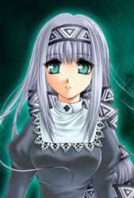

Récits Légendes de Kirin Tor Personnages Célébrités Guildes
Outils Calendrier Calendrier Illustré Mod d'interface
Informations Historiens FAQ Liens Crédits
Les légendes de Kirin Tor

==> Afficher les personnages de Maho
Maho
Age : 20 ansSexe : Femme
Race : Humain
Faction : Alliance
Formation : Paladin
Description : La petite fillette au cheveux argenté était assise sur une vieille chaise en bois. Elle ne bougeait pas d'un centimetre et même ses yeux ne cillait pas, regardant la porte en bois délabré, mais néanmoins fermé à clef. Ainsi elle ressemblait à une simple poupée sans vie, tronant au milieu d'une petite chambre au confort spartiate. Une seule petite fênetre laissait rentré un simple rayons de soleil dans la chambré, à travers des barreaux solide et une fenetre sale. A travers la porte en bois massif, l'on pouvait entendre deux personnes ayant une discussion assez âpres. En tendant l'oreille, l'on pouvait entendre en fond des cantiques et autre prieres pour la Lumière.
"- Je ne peut m'en occupé, fit la premiere voix avec beaucoup de stresse.
- Un ordre est un ordre, mon fils. Et vous savez que ni vous, ni personne ne peu aller contre la voix de L'archeveque. repondit la deuxieme voix, plus calme et posé.
- cet enfant ne sait même pas qu'elle vit ! comment pourrai-je m'en occupé alors que d'autre enfant on besoin d'aide par ici. Elle va demandé une attention constante... Et que vont penser les autre paroissiens si ils apprenent que cette...chose..., la voix ne finit pas sa phrase.
- je comprend vos revendications, et mon discourt fut le même lors de mon entretient avec L'archeveque.
Il fit une pause
- mais comprenez bien que vous n'avez desormais plus le choix. Toute les nouvelles lune, un agent de l'archeveque viendra vous demander un rapport. Nous pourrons decider ainsi plus sereinement son avenir. En attendant, occupez vous d'elle du mieux que vous le pouvez. Notez chacun de ses mots, de ses actes. Et surtout, névoquez jamais sa présence en nos mur. Si nous avons choisie cette abayye, c'est pour son calme et...
- Et aussi car personne ne viendra la chercher ici ! se plaignit la premiere voix. Vous me demandez presque l'impossible... mais je n'ai pas le choix.
- Bien. Alors je n'ai plus rien à faire ici. Que la Lumiere vous garde, mon fils.
- De même pour vous, Mon père... Oh ! mon père ! j'ai egalement un sujet que je voudrai évoquer avant que vous ne partiez..."
Doucement, les voix devinrent faibles jusqu'a devenir inaudible, puis inexistante. Alors, à ce moment, la jeune fillette pu refermer ses yeux gris et vide. Des yeux de poupée.
...
"Maho ! vient par ici s'i lte plait !"
L'abbé faisait des grand signe vers la jeune fille en tablier de forgeron couverte de suie. l'apprentie Forgeron accoura vers lui, laissant ses instrument de travail à son Maitre, qui continua ce qu'elle faisait maugréant dans sa moustache contre l'abbé.
"Mon père ?, fit elle essouflé, repoussant une meche argenté de devant ses yeux.
- Maho, ma fille, jai reçu un courrier pour toi. Tu va devoir abandonné ton travail à la forge. Mais je ne puis t'en dire plus, sourit-il, un brin excité par la nouvelle qu'il venait d'apprendre."
Maho déplia la lettre:
" Maho SilverLight,
Par le présent courrier, nous vous enjoignont de rejoindre le camp d'entrainement militaire de L'eglise de Stormwind afin de vous faire débuter votre apprentissage de Paladin. Vous devrez vous préparer un paquetage avec quelque affaires personnelles et partir au plus vite en direction de Stormwind. De là, vous serez prit en charge par l'Eglise et vous serez menez au camp d'entrainement miitaire le plus proche.
Veuillez, s'il vous plait, nos plus sincère pières pour votre reussite dans cette voie sacré."
La lettre est signé d'une estampille représentant le symbole de L'Eglise de la lumière.
Délicatement, Maho referme la lettre. Malgré la joie qu'elle éprouve d'avoir été choisie pour devenir Paladin de la Lumière, un pincement au coeur lui arracha une larme. Quitter le seule endroit, les seuls gens qu'elle avait connu la terrorisait et l'accablait. Jamais elle ne souvenait d'avoir été aussi triste. Du moins, pas depuis qu'elle se souvient. En effet, Maho n'a aucune idée de ce a quoi ressemblait son enfance, ni même sa propre famille. L'abbé avait douloureusement évoqué la mort de ses parents lors d'une attaque de bandit dont elle fut la seule survivante. Rien de plus, rien de moins.
L'abbé lui toucha l'épaule. Et lui fit un sourire amicale, réconfortant.
"Ne t'inquiete pas, ma fille. Tu t'en sortira très bien. Promet moi de revenir me voir quand tu sera Paladine.
- Je vous le promet, mon père, répondit-elle dans un sourire plein de larmes.
alors qu'elle partit faire son sac, ce fut l'abbé qui poussa un soupir de soulagement.
...
Maho finissait ses entrainements physique lorsque le sergent vient la voir.
"Soldat SilverLight, Au rapport !", hurla le sergent alors qu'il n'était pas si loin que ça.
Sans attendre une seule seconde, Maho courru face au sergent et se mit au garde à vous. Après un salut réglementaire et sec, elle prononça d'une voix clair:
"Maho SilverLight au rapport Sergent !
- Repos, Soldat. lança t'il négligeament. Bien, j'ai reçu l'ordre de vous annoncer la fin de votre entrainement. Vous faites dersormais partie de l'ordre de la lumières. Toute mes féliciations soldat. Votre paquetage vous attend. Vous aller en direction de L'église de Stormwind. Vous rencontrerez votre Maitre Paladin. Rompez !"
Maho se dirigea vers sa chambrée au pas de course et se rendit à l'exterieur du camp. Desormais, elle allait enfin être utile. Enfin.
...
Lorsqu'elle rencontra son maitre pour la premiere fois, elle fut surprise que ce fut à l'interieur d'une taverne, à Ironforge. Maitre Gorkin, un nain dont l'expérience n'avait d'égale que son humour nanesque. Celui ci fit tout ce qui était en son pouvoir pour etre un Maitre digne de ce nom et maho fit de son mieux pour répondre à ses attentes.
Bien apres, elle rencontra un certain Cobalt, qui l'aida sans même demander de l'argent ou une compensation en échange. Ils devinrent amis assez facilement.
Peu de temps après leur rencontre, Maho intégra la Fameuse Phalange Ecarlate, où elle devint Fantassin Ecarlate. Aujourd'hui encore, elle fait son maximum pour être utile à la phalange...
______________________________________________
L'auteur de cette petite histoire présente ses 'excuses les plus sincères. pour les "fotte d'aurtaugraffe" qui se sont glissées.... non, répendues à travers ces lignes.
Plus d'infos sur Maho >>>